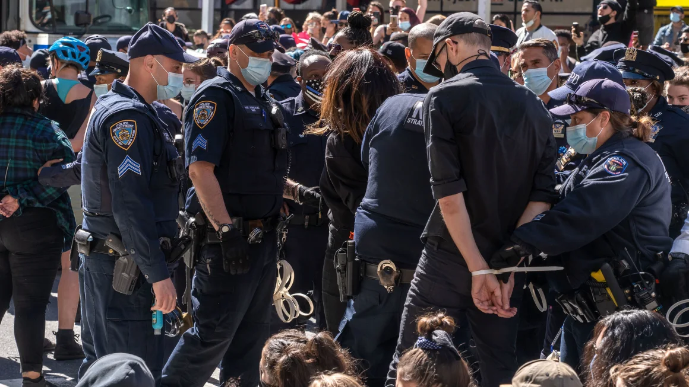

This website helps fiter data of arrest in NYC, we do this by filtering by age and gender. This is useful due to the high crime rate in NYC, in 2024 there was a shocking 122,034 people arrested and prosecuted. Also in 2024 the average crime rate of the city averaged one murder and 80 felony assaults each day, this meant that due to the high population of NYC citizens had a 1.3 in 10 million daily chance of being a murder victim and a 10 in 1 million chance of falling victim to a felony assault.
